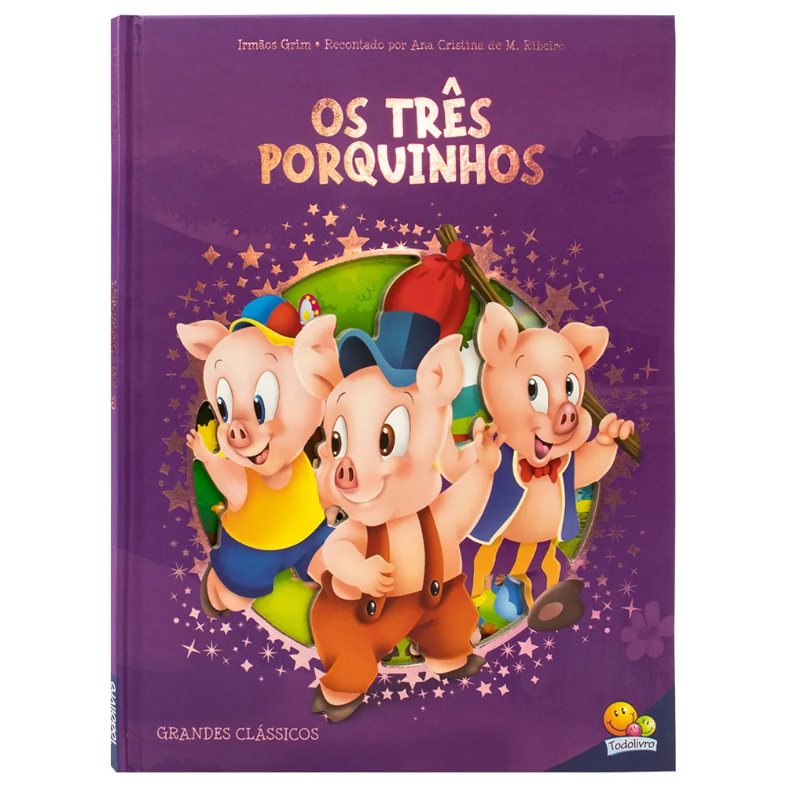

Tres porquinhos
Voltar
A história dos Três Porquinhos é um conto clássico que conta a aventura de três irmãos porquinhos que decidem construir suas próprias casas para se proteger do lobo mau.
Primeiro Porquinho: Constrói sua casa de palha, pois é a forma mais rápida. O lobo mau chega, sopra a casa e a destrói.
Segundo Porquinho: Constrói sua casa de madeira, que também é rapidamente destruída pelo lobo.
Terceiro Porquinho: Constrói sua casa de tijolos, a mais sólida e resistente. O lobo tenta soprar, mas não consegue derrubar a casa.
No final, o lobo tenta entrar pela chaminé, mas o terceiro porquinho o engana, fazendo-o cair em uma panela de água quente. O lobo foge e os três porquinhos vivem felizes e seguros.
